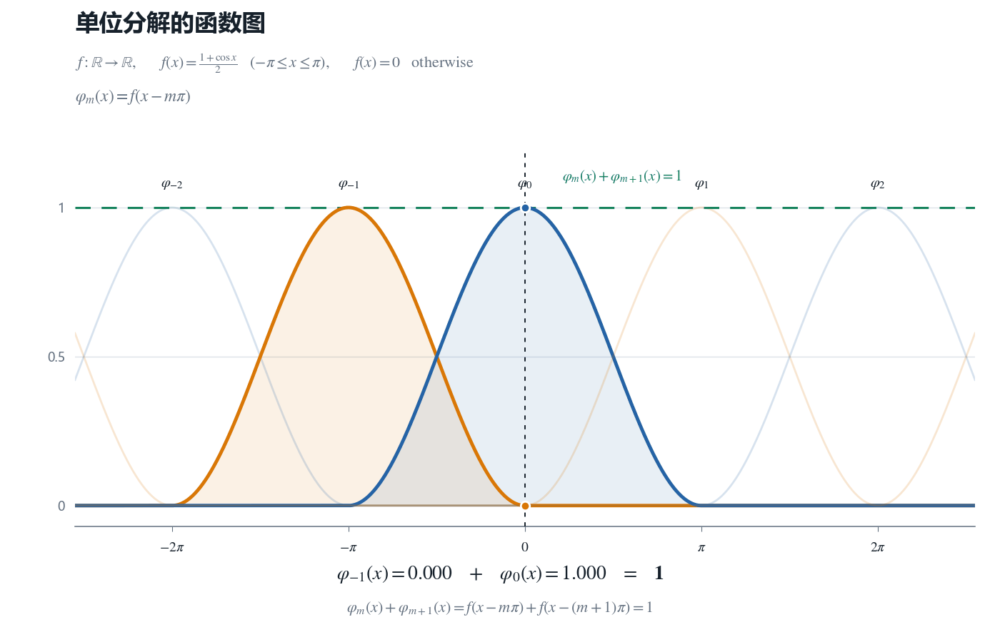
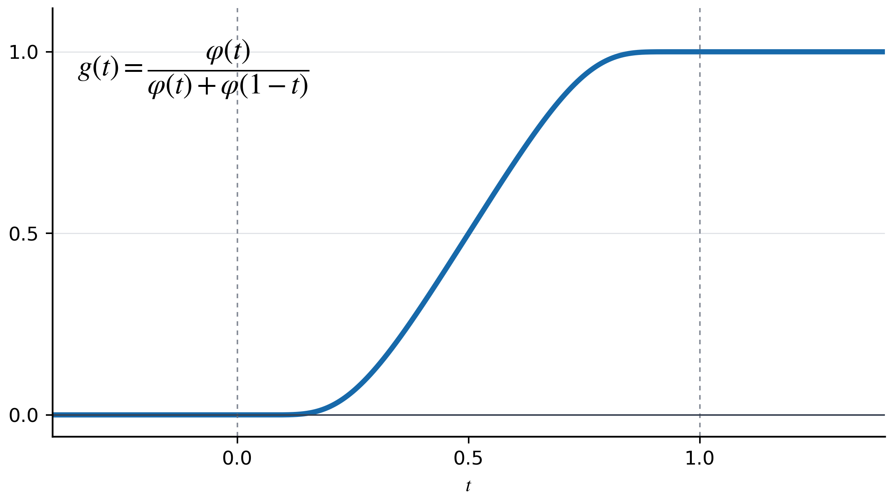
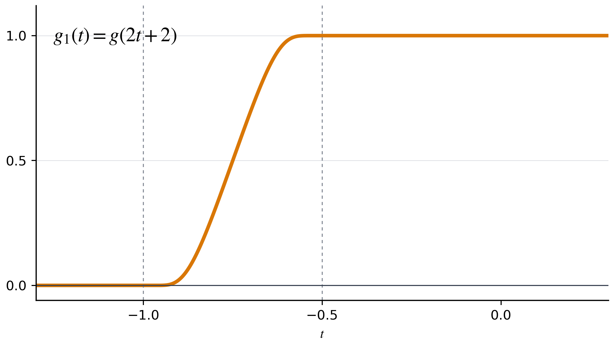
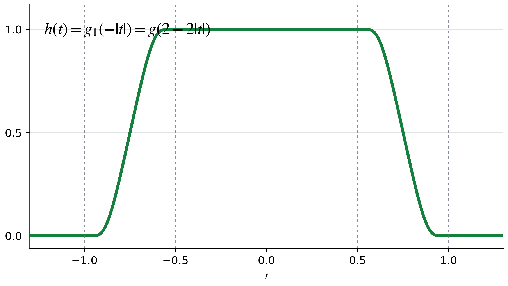
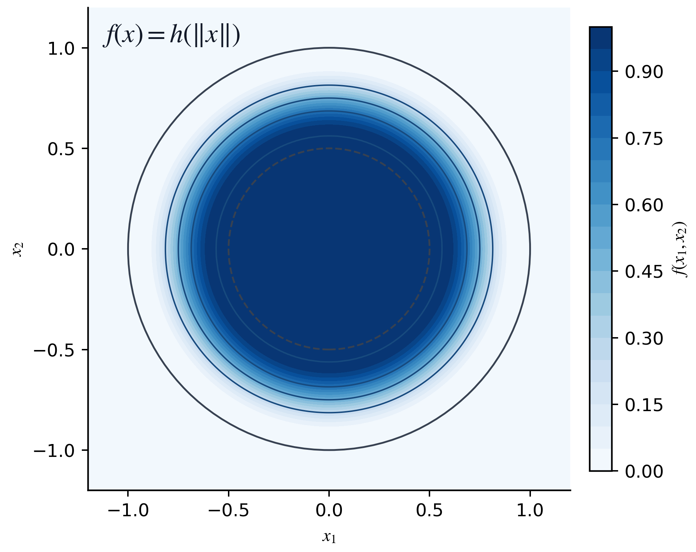
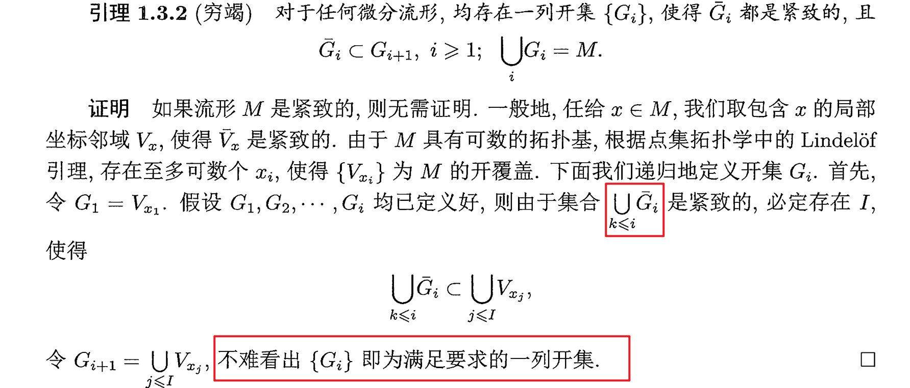
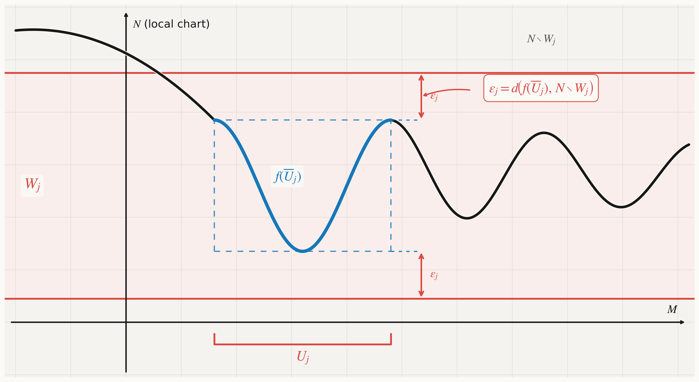
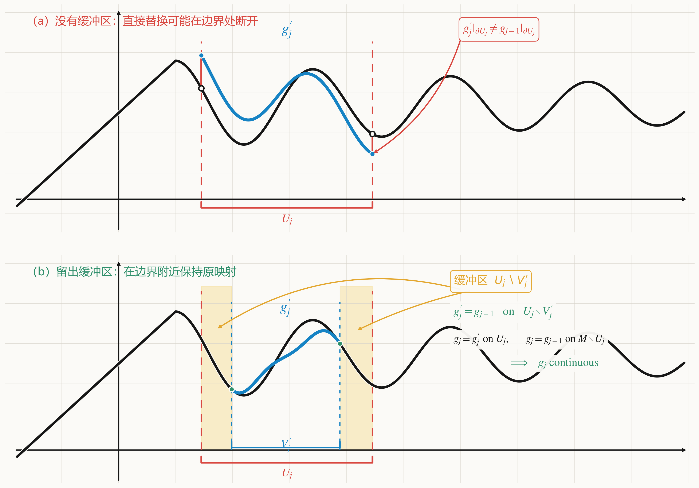
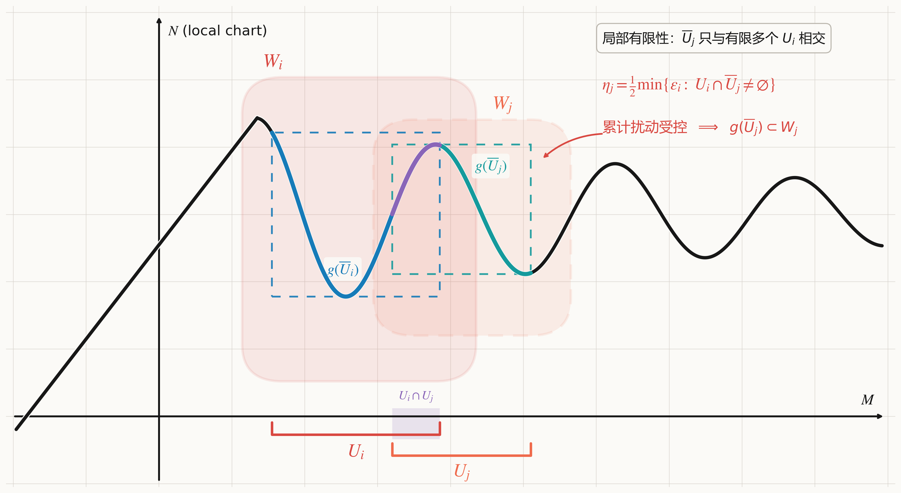
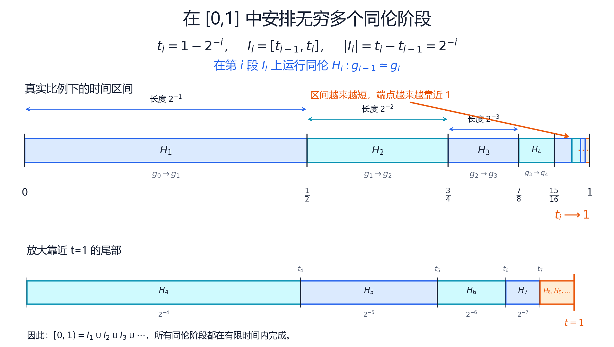

说实话写了这么多不知道会不会有点啰嗦，但是我尽力把我的直觉和理解转换成文字了，哪里有错误希望大家多多指正！也希望大家多提问题互相帮助，我参加的讨论班比较少，对于比较好的讨论班没什么概念，希望大家对怎么讲比较好、更希望听什么提出意见喵
单位分解
我们知道坐标卡可以用来局部拉回欧氏空间的一些概念（比如内积），但是一般来说不同的坐标卡之间拉回的概念是不兼容的，为此，我们要引入单位分解，用来把局部的对象拼接为整体的对象。
单位分解的定义
定义（单位分解）:给定一个微分流形$M$和它的一个开覆盖$\{U_\alpha\}_{\alpha\in \Gamma}$，如果存在（至多可数个）$(g_i:M\to \mathbb{R})\in C^\infty(M)$使得
- $0\leq g_i(x)\leq 1\quad \forall x\in M$
- 对任意的$i$，都存在$\alpha(i)\in\Gamma$使得$\operatorname{supp} g_i\subset U_{\alpha(i)}$
- $\{\operatorname{supp} g_i\}$是局部有限的（也就是说，空间中的每个点都有一个邻域，这个邻域只和集族中有限多个集合相交）
- $\sum_i g_i=1$
则称$\{g_i\}$是从属于$\{U_\alpha\}$的一个（光滑）单位分解。进一步，我们令$g_\alpha=\sum_{\alpha(i)=\alpha}g_i$（从而如果没有$i$满足$\alpha(i)=\alpha$，则求和自动为$0$），则由于
$$ \begin{aligned} \operatorname{supp} g_\alpha &= \overline{\{x:g_\alpha(x)\neq0\}} \\ &= \overline{\{x:\sum_{\alpha(i)=\alpha}g_i(x)\neq0\}} \\ &= \overline{\{x:\exists i \textnormal{ s.t. } \alpha(i)=\alpha, g_i(x)\neq0\}} \\ &= \overline{\bigcup_{\alpha(i)=\alpha}\{x:g_i(x)\neq 0\}}\\ &= \overline{\bigcup_{\alpha(i)=\alpha}\overline{\{x:g_i(x)\neq 0\}}}\\ &= \overline{\bigcup_{\alpha(i)=\alpha}\operatorname{supp} g_i}\\ &= {\bigcup_{\alpha(i)=\alpha}\overline{\operatorname{supp} g_i}}\\ &= {\bigcup_{\alpha(i)=\alpha}\operatorname{supp} g_i} \end{aligned} $$（其中倒数第二步用到了$\{\operatorname{supp} g_i\}$的局部有限性），我们有$\{\operatorname{supp} g_\alpha\}$也是局部有限的。我们称$\{g_\alpha\}$为从属于$\{U_\alpha\}$的（广义）单位分解。
注：为什么我们要求从属于某个开覆盖，一来是因为我们希望把局部的信息拼接起来，二来是不需要从属于某个开覆盖的单位分解非常容易找，比如常数函数$1$就满足上面的所有条件。
注：局部有限性使得第四点的和式点点有定义。
注：第三点不能改成点点有限，因为光滑性是局部定义的，而不是点点定义的，每个点上只有有限个$g_i$不为$0$不能确保第四点中的和式局部上是有限和，这导致我们无法判断和式的光滑性，更不用谈把一些局部概念光滑地拼接到一起了。
单位分解的例子
例： 令
$$f:\mathbb{R}\to\mathbb{R},f(x)= \begin{cases} \dfrac{1+\cos x}{2} & \textrm{for}\ -\pi\leq x\leq\pi \\ 0 & \textrm{otherwise} \end{cases} $$则$f\in C^1(\mathbb{R})$
令
$$\phi_{m}(x)=f(x-m\pi)$$那么 $\operatorname{supp}(\phi_i)$ 是一个长度为 $2\pi$ 的闭区间，因而是紧集。每个函数的取值范围都是 $[0,1]$。
每个点的邻域至多与三个支集相交，因此该函数族的支集满足局部有限性。在任意一点处，非零函数至多只有两个，并且
$$ \begin{aligned} \phi_{m}(x)+\phi_{m+1}(x) &=f(x-m\pi)+f\bigl(x-(m+1)\pi\bigr)\\ &=1+\frac{\cos(x-m\pi)+\cos\bigl(x-(m+1)\pi\bigr)}{2}\\ &=1, \end{aligned} $$从而，函数族 $\lbrace\phi_i\rbrace_{i\in\mathbb Z}$ 构成一个单位分解。

单位分解存在性证明
鼓包函数
对于一般的微分流形，我们也希望在每个小邻域上找一个长得像$\frac{1+\cos x}{2}$的鼓包函数，像图中这样叠起来，从而构造一个单位分解，非常可惜的是我们这里构造的函数只有$C^1$的光滑性（这本质上是因为$\cos$是解析的，所以如果某个点处各阶导数都为$0$，则函数必须点点为$0$），所以我们需要重新构造，在差一个平移和对称的意义下，我们希望找一个光滑函数$\varphi$，满足在原点处的各阶导数都为$0$，也就是：
$$\varphi(0)=\varphi'(0)=\cdots=\varphi^{(k)}(0)=\cdots=0$$由泰勒展开我们知道：
$$\begin{aligned} \varphi(t) &= \varphi(0)+\varphi'(0)t+\cdots+\frac{\varphi^{(k)}(0)}{k!}t^k+o(t^k) \\ &= o(t^k) \end{aligned}$$也就是说对任何自然数$k$都有
$$\lim_{t \to 0} \frac{\varphi(t)}{t^k}=0$$做变量代换$t=\frac{1}{s}$，我们得到：
$$\lim_{s \to \infty} {s^k}{\varphi(\frac{1}{s})}=0$$很显然我们可以取$\varphi(1/s)=e^{-s}$，也即$\varphi(t)=e^{-1/t}$。再利用归纳法，我们可以计算$\varphi$在$0$点的各阶导数
$$\varphi^{(m)}(0)=\lim_{t \to 0} P_{2m}(t)\varphi(t)=0$$其中$P_{2m}$是一个不超过$2m$次的多项式，从而$\varphi(t)$满足我们的需求。
注：上面说在差一个平移和对称的意义下，实际上我们要直接对称还不好做，因为$|x|$在$x=0$处不是光滑的，所以如果我们要做对称，需要复合$|x|^2$来对称。
为了后面做局部光滑延拓的需要，我们这里采用另外一种对称方式。首先我们回忆度量空间上的Urysohn引理，对度量空间$(X,d)$上两个不相交的闭集$A$和$B$，我们希望用连续函数分离$A$和$B$，所以我们构造连续函数
$$\frac{d(x,A)}{d(x,A)+d(x,B)}$$注意到这个函数把$A$中的点映成了$1$，把$B$中的点映成了$0$，并且在$A,B$之外，函数值始终在$(0,1)$，类比这个思路，我们有光滑版本的“Urysohn引理”，考虑光滑函数
$$g(t)=\frac{\varphi(t)}{\varphi(t)+\varphi(1-t)}$$满足在$t\leq 0$时$g(t)=0$，$t\geq 1$时取$1$，而在其他地方始终在$(0,1)$。
注：分母永远大于$0$，因为等于$0$当且仅当$t=0$且$1-t=0$，而这是不可能的。
做一个平移和压缩得到$g_1(t)=g(2t+2)$，再关于$y$轴做对称$h(t)=g_1(-|t|)$
注：这里$t=0$附近$h\equiv 1$，所以自动光滑。
注：课本上少了个负号，这是错的。




由此我们有如下引理：
引理1.3.1（鼓包函数或截断函数）：
- 存在光滑函数$h:\mathbb{R}\to \mathbb{R}$，使得 $$h(x)=0\quad\forall |x|\geq 1;$$ $$h(x)\in (0,1] \quad\forall x\in (-1,1);$$ $$h(x)=1\quad \forall x\in \left[-\frac{1}{2},\frac{1}{2}\right]$$
- 在$\mathbb{R}^n$上存在光滑函数$f:\mathbb{R}^n\to \mathbb{R}$，使得 $$f(x)=0\quad\forall \|x\|\geq 1;$$ $$f(x)\in (0,1] \quad\forall \|x\|< 1;$$ $$f(x)=1\quad \forall \|x\|\leq \frac{1}{2}$$
进一步，我们希望说明微分流形上从属于某个开覆盖的（至多可数）光滑单位分解的存在性。
对紧空间而言，我们很容易找单位分解，因为开覆盖$\{U_\alpha\}_{\alpha\in\Gamma}$一定有有限子覆盖$\{U_i\}_{i=1}^n$，对于连续、可度量化的情形，我们只需构造$f_i(x)=d(x,X\backslash U_i)$再归一化就可以了，对于光滑的情形，我们可以局部拉回鼓包函数、零延拓来替代距离函数。
对于一般的空间，我们希望沿用上面的思路，所以我们先利用第二可数性把空间分解成可数个紧集的并，就像欧氏空间是$\sigma$-紧的，可以分解成$\bigcup_n \overline{B_n(0)}$一样，我们也可以对拓扑流形做这样的操作：
注：事实上连通流形上第二可数等价于$\sigma$-紧，等价于可度量化，等价于仿紧，所以直接用$\{B_n(x_0)\}_n$即可，下面我们给出第二可数推出“穷竭”的直接证明。
Lindelöf引理
引理（Lindelöf）：设$X$为第二可数空间，$B$为它的可数拓扑基，$\{U_\alpha\}_{\alpha\in \Gamma}$为$X$的一个开覆盖，则$\{U_\alpha\}$必有可数子覆盖。
证明：设$B_\alpha=\{\beta\in B\mid \beta\subset U_\alpha\}$，$B'=\bigcup_{\alpha\in\Gamma}B_\alpha$
$$\begin{aligned} X &= \bigcup_{\alpha\in\Gamma}U_\alpha \\ &= \bigcup_{\alpha\in\Gamma}\bigcup_{\beta\in B_\alpha}\beta\\ &= \bigcup_{\beta\in B'}\beta \end{aligned}$$由于每个$\beta\in B'$都落在某一个$U_{\alpha(\beta)}$，所以$X=\bigcup_{\beta\in B'}U_{\alpha(\beta)}$。又因为$B'\subset B$是一个可数集，所以$\{U_\alpha\}_{\alpha\in\Gamma}$有可数子覆盖$\{U_{\alpha(\beta)}\}_{\beta\in B'}$。
穷竭的存在性
引理1.3.2（穷竭）：对于任何微分流形，均存在一列预紧（即闭包紧）开集$\{G_i\}$，且
$$\overline{G_i}\subset G_{i+1}\quad \forall i\geq 1;$$$$\bigcup_i G_i=M.$$
注：课本这里下标写错了，而且写的有点啰嗦，因为$\bigcup_{k\leq i}\overline{G_k}$其实就是$\overline{G_i}$。

证明：由于流形是局部紧的，对每个点$x$都可以找到一个预紧邻域$V_{x}$，从而$\{V_x\}$是空间的一个开覆盖。我们定义的微分流形是第二可数的，由Lindelöf引理，我们有可数子覆盖$\{V_{x_i}\}$。
取$G_1=V_{x_1}$，则$G_1$预紧。假设$G_k$已经定义，$\overline{G_k}\subset \bigcup_i V_{x_i}$，从而可以找到$I_k$使得$\overline{G_k}\subset \bigcup_{i\leq I_k}V_{x_i}$。定义$G_{k+1}=\bigcup_{i\leq I_k}V_{x_i}$，则$G_{k+1}$是预紧的。
注：书上这里漏了一步，没有要求$\{I_k\}_{k\in\mathbb{N}}$是严格单调递增的，这会使得$G_i$不一定能够覆盖全空间$M$。比如取空间$S^1\sqcup\mathbb{R}$，让$V_1=S^1$，$V_2,V_3,\dots$是$\mathbb{R}$的一个可数开覆盖，那么如果取$G_1=V_1$是一个预紧开集，$G_k=V_1$，则满足$\overline{G_i}\subset G_{i+1}$，但是$\bigcup_i G_i\neq M$。
注：如果我们保证空间的连通性，假设$I_k\nrightarrow \infty$，由于$I_k$单调递增（注意，书上甚至没有要求单调递增，所以这个也是预设之一），所以$I_k$有界，设$I_k\leq N=\max_j I_j$，那么$G_k=\bigcup_{i\leq I_k} V_{x_i}\subset\bigcup_{i\leq N} V_{x_i}$。所以对充分大的$k$，都有$G_k=\bigcup_{i\leq N}V_{x_i}$，这说明$G_k\subset\overline{G_{k+1}}\subset {G_{k+2}}$，从而$G_k=\overline{G_k}$，由空间的连通性得到$G_k=M$。
单位分解存在性
定理1.3.3（单位分解的存在性）：对于微分流形$M$的任何开覆盖$\{U_\alpha\}_{\alpha\in\Gamma}$，均存在从属于它的单位分解。
证明：由前面的引理1.3.2，我们可以找一个开集列$\{G_i\}$，现在定义紧集$A_i=\overline{G_i}\backslash{G_{i-1}}$。
每个点$x\in A_i$附近我们可以找一个坐标邻域$(U_x,\varphi_x)$，使得
- $\varphi_x(U_x)=B_2(0)$;
- $U_x\subset U_{\alpha(x)}$对某个$\alpha(x)\in\Gamma$成立；
- $U_x\cap A_j=\emptyset\quad|j-i| > 1$
令$V_x=\varphi_x^{-1}(B_{\frac{1}{2}}(0))$，则$\{V_x\}_{x\in A_i}$是$A_i$的一个开覆盖，所以有有限子覆盖$\{V_{x_j^i}\}_{j=1}^{n_i}$。定义$f_x$为$f\circ \varphi_x$的零延拓，自动是光滑的，并且$\operatorname{supp} f_x\subset U_x$。并且$\{U_{x^i_j}\}$是局部有限的，从而$f_{x_j^i}$的归一化就是我们要的单位分解。
单位分解的应用
光滑版本的Urysohn引理
推论1.3.4：设$A$是微分流形$M$的闭子集，如果$U$为$A$的开邻域，则存在光滑函数$\phi:M\to\mathbb{R}$使得$\phi|_A=1$且$\operatorname{supp} \phi\subset U$。
证明：考虑开覆盖$\{U,M\backslash A\}$和从属于它的单位分解$\phi_U,\phi_{M\backslash A}$，从而$(\phi_U)|_A$=1，满足支集落在$U$中。
逆紧函数
定义（逆紧函数）：称连续映射是逆紧的，如果紧集的原像是紧集。
8.16补充1：之前讲课讲到后面有点晕了，忘记讲逆紧映射的动机和好处了，一方面，逆紧映射刻画了欧氏空间中$x\to\infty$则$f(x)\to\infty$这个性质，因为如果$|f(x)|\leq M$，那么因为逆紧就有$|x|\leq N$，所以这个时候$x$不可能趋于无穷，所以$x$趋于无穷的时候函数至少有一个子列是趋于无穷的。
8.16补充2：好处除了下面写的跟覆叠映射有关之外，实际上局部紧Hausdorff空间之间的proper映射还自动是闭映射（利用局部紧空间的子空间闭当且仅当和任意紧集的交集都是紧的），回顾我们之前的浸入定理，在函数是proper的时候，正向和反向都是连续的，所以只要是单射，就可以确保函数是同胚，从而是嵌入。
注：流形之间的逆紧局部同胚是覆叠映射。
注：紧空间上的连续函数自动是逆紧的，所以我们下面关心非紧空间上是否存在逆紧函数。
命题1.3.5（逆紧函数的存在性）：非紧微分流形上总存在光滑的逆紧函数。
证明：由Lindelöf引理知流形的地图册可以有可数子覆盖，记为$\{U_i\}$，并且由于流形是局部紧的，我们可以不妨设$\overline{U_i}$是紧的，设$\{g_i\}$是从属于它的广义单位分解，令$\rho:M\to\mathbb{R}$为
$$\rho(x)=\sum_iig_i(x)$$$$\rho(x)\geq 1$$
只需证明$\rho^{-1}(-\infty,k]$是紧集，若对$i 注：若$\rho:M\to\mathbb{R}$是光滑逆紧函数，则$\rho^{-1}(-i,i)$是一列穷竭。
命题1.3.6（连续延拓）：设$K$是微分流形$M$中的闭集，$f:K\to\mathbb{R}^n$是连续映射，则存在连续映射$F:M\to\mathbb{R}^n$，使得$F|_K=f$，且$F(M)\subset\operatorname{conv} f(K)$ 注：这个命题的结论不能升级为光滑延拓，因为可能原本在$K$中就不光滑。 证明：我们先默认$M$上存在度量$d$使得$(M,d)$为度量空间。我们希望用已有的信息来延拓，也就是说闭集$K$外每个点找一个$K$中离它充分近的点，然后用这些点形成的覆盖的单位分解来拼接这些信息，离闭集远的点因为支集的局部有限性自动是光滑的，从而连续，并且不需要太多的信息，所以球可以取得大一些，离闭集近的点我们取比较小的开球，从而边界附近的连续性可以保证。 下面我们详细解释这一步骤： 首先对$M\backslash K$取开覆盖$\{B_x\}_{x\in M\backslash K}$，我们等会根据估计的需要来取半径的大小，和上面一样，我们可以可数化这个覆盖并取从属于这个覆盖的单位分解$\{\rho_i\}$。对每个$x_i$我们都可以找一个$\overline{x_i}\in K$离$x_i$充分近，下面我们来估计边界的连续性，考虑
从而对边界点$x_0$附近的点$y\in B_{x_j}\cap M\backslash K$，由局部有限性知道$y$附近只有有限多个$\operatorname{supp} \rho_i$，对这些$\rho_i$，我们要控制$|f(x_0)-f(\overline{x_i})|$，而这根据连续性只需要控制$d(\overline{x},x_0)$，其中$\overline{x}$是$x$在$K$中的对应点。
注意到我们现在有的未定信息：$B_x$的半径以及$x$和它的对应点$\overline{x}$之间的距离，因为我们有 对第一项，由于离$K$远的地方的连续性是相当直接的，我们不需要精细的覆盖，而在边界附近则需要比较多的信息，所以我们考虑$d(\overline{x},x)$和$d(x,K)$是同阶的，注意到
由于$d(x,K)\leq 2d(x,K)$，我们可以找到这样的$\overline{x}\in K$满足 由于$F$的连续性需要控制的参数是$d(y,x_0)$，所以我们最终要用$d(y,x_0)$来控制$d(\overline{x},x_0)$。为此我们考虑如下不等式： 如果我们取$B_x$的半径为$\frac{1}{2}d(x,K)$，则立即得到 进而取$d(y,x_0)<\frac{\delta}{6}$则有 设$M,N$是光滑流形， $[M,N]_{C^\infty}$是$M$到$N$的全体光滑同伦类，$[M,N]$是通常意义上的全体连续同伦类，则有如下自然映射：
下面我们希望说明这个自然映射是双射，也就是说光滑映射之间的光滑同伦和拓扑同伦是一样的，也即有如下两个命题成立：
命题1.3.9：设$f:M\to N$是连续映射，则存在同伦于$f$的光滑映射$g$。
命题1.3.10：设$f_0,f_1$是微分流形之间同伦的光滑映射，则存在光滑映射$H:M\times \mathbb{R}\to N$，使得$t\leq 0$时$H(x,t)=f_0(x)$，$t\geq 1$时$H(x,t)=f_1(t)$。 为了把连续的对象改造成光滑的对象，我们需要先引入光滑逼近：
命题1.3.7（光滑逼近）：设$f:M\to \mathbb{R}^k$为微分流形$M$上的连续映射，则任给$M$上的正连续函数$\varepsilon:M\to \mathbb{R}$，存在光滑映射$g:M\to \mathbb{R}^k$，使得
证明：
局部上我们用$f(x)$这个常值映射来代替，自动是光滑的，然后再用单位分解拼起来，要满足误差估计要求每个点的邻域取得足够小，使得$f$的变化被这一点的$\varepsilon$控制，而且$\varepsilon$的变化还不大。 具体来说，对每个$x\in M$，都可以找到它的一个邻域$U_x$，使得对任意的$y\in U_x$都有$\|f(y)-f(x)\|\leq \frac{1}{2}\varepsilon(x)\leq \varepsilon(y)$。 对$\{U_x\}_{x\in M}$可以找到从属于它的一个单位分解$\{\rho_i\}$，并且设$\operatorname{supp} \rho_i\subset U_{x_i}$。 定义 那么
推论1.3.8（局部光滑逼近）：设$f:M\to \mathbb{R}^n$为微分流形上的连续映射，$\varepsilon:M\to \mathbb{R}$为$M$上的正连续函数。如果$A$是$M$上的闭集，$U$是包含$A$的开集，则存在连续映射$h:M\to \mathbb{R}^k$： \(\|h(x)-f(x)\|\leq \epsilon(x),\quad \forall x\in M;\) \(h\) 在 \(A\) 的某个开邻域中是光滑的，且若 \(f\) 在开集 \(V\) 中是光滑的，则 \(h\) 在 \(V\) 中也是光滑的； \(h\) 和 \(f\) 在 \(M\setminus U\) 上相等。 事实上，这个命题说明我们可以只在给定的开集上做光滑逼近，而其它地方保持不动。 证明：记号和命题1.3.7保持一致，对开覆盖$\{U,M\backslash A\}$可以找到从属于它的单位分解$\rho_0,\rho_1$，我们考虑如下连续函数
对$M\backslash U$中的点$x$，由于$\operatorname{supp} \rho_0 \subset U$，所以$h(x)=f(x)$。 对$A\subset M\backslash \operatorname{supp} \rho_1$每个点$x$，$\rho_1(x)=0$，故$h(x)=g(x)$，从而$h$在$A$的开邻域$M\backslash \operatorname{supp} \rho_1$是光滑的。 注意到$h$的光滑性完全由$f$决定，所以第二条也成立。 下面我们继续命题1.3.9的证明: 命题1.3.9（满射）：设$f:M\to N$是连续映射，则存在同伦于$f$的光滑映射$g$。 注：
由如下映射可知，$B_r(0)$与$\mathbb{R}^k$是微分同胚的：
所以我们总可以调整单位分解中的坐标卡使得像变为$\mathbb{R}^k$，并且由于$f$是连续的，对$f(x_0)$的坐标邻域$W$（打到$\mathbb{R}^k$），存在$x_0$的邻域$U$使得$f(U)\subset W$，从而我们可以对这些邻域$U$，不妨仍记作$\{U_\alpha\}$，像单位分解的证明那样操作： (1) $\varphi_x(U_x)=B_2(0)\cong \mathbb{R}^k$； (2) 存在 $\alpha(x)\in\Gamma$，使得 $U_x\subset U_{\alpha(x)}$； (3) $U_x\cap A_j=\varnothing$，$\forall\,|j-i|>1$。 然后再局部有限化，就可以得到$\{U_i\}$和它的加细$\{V_i\}$： (1) $\overline{U}_i$ 均为紧集，且 $f(\overline{U}_i)$ 包含于 $N$ 的坐标邻域 $W_i$ 中，$W_i$ 在坐标映射下的像是 $\mathbb{R}^k$； (2) 存在缩小的坐标邻域 $V_i$，使得 $\overline{V}_i\subset U_i$，且 $\{V_i\}$ 仍为 $M$ 的开覆盖。 8.22补充：总体上看，我们的证明依赖于局部光滑逼近，我们对整个$f$做操作，根据局部光滑逼近的要求，我们需要找需要修改的区域，因为连续函数可以做到处处不光滑，所以我们要对整个空间取一个开覆盖$U_i$，为了方便归纳，我们先假设这是一个可数的覆盖，再在里面取一个闭集$A_i$，保证$A_i$还是空间的一个覆盖。 我们要保证修改之后的函数和原来同伦，最直观的同伦就是直线同伦，为了使用直线同伦，我们要保证修改前后的函数落在同一个凸集里面，而流形上没有凸的概念，所以我们要确保函数修改后落在给定的坐标卡$W_j$上，而这个坐标卡$W_j$微分同胚于$\mathbb{R}^k$上的凸开集（而实际上所有的凸开集都微分同胚于开球，开球又微分同胚于全空间，所以可以不妨假设就是$\mathbb{R}^k$）： 由于我们假设了流形上面有度量，我们就可以取函数的值域和这个给定的凸开集外的距离，保证修改后的函数误差不超过这个距离：  而这导致了一个问题，是这样取光滑逼近可能会导致全局函数变得不连续：  为了保证不出现图上的情况，我们取一个缓冲区$V_j'$，只在这个缓冲区内做修改，而根据局部光滑逼近，在$U_j\backslash V_j'$上是不变的。  我们可能会考虑，开覆盖重叠的地方可能发生了多次修改，根据我们刚才的要求，修改之后必须始终落在我们给定的坐标卡，所以我们要对这多次修改的误差取一个最小值： 要使得这个最小值有意义，我们在一开始限定$\overline{U_j}$是紧集，且$U_i$是局部有限的，这样最小值一定能取到。 一个点附近有多个$U_j$，所以在某种意义上我们还得取$\eta_j$的最小值， 我们先用书上的方法：$\eta_j$是对应于$U_j$的，所以我们可以取一个从属于$U_j$的单位分解$\rho_j$，然后把这些局部误差数据拼起来，得到全局的误差函数
然后可以在每个$\overline{U_j}$上取最小值$\overline{\varepsilon_j}$，用这个值来替代$\eta_j$的最小值。 至此，我们已经明确了要构造的$g_i$是什么样的，按书上的记号$g_i'$是$g_{i-1}$的局部光滑逼近， 首先，为了$g_i(\overline{U_j})\subset W_j$，我们要让修改前后的误差足够小： (1)’ $ d\left(g_{i}^{\prime}(x), g_{i-1}(x)\right) \leqslant 2^{-i} \bar{\varepsilon}_{i}, \forall x \in U_{i} $; 而前面改的地方的误差至少要在$\varepsilon(x)$： (1) $d(g_i(x),g_{i-1}(x))\leqslant 2^{-i} \varepsilon(x)$ 我们只在缓冲区内修改： (2)’ $ g_{i}^{\prime} $ 和 $ g_{i-1} $ 在 $ U_{i} \setminus V_{i}^{\prime} $ 中相同; (2) \(g_i\) 和 \(g_{i-1}\) 在 \(M\setminus U_i\) 中相等 局部光滑逼近： (3)’ $ g_{i}^{\prime} $ 在 $ K_{i} \cap U_{i} $ 的某开邻域中是光滑的. (3) \(g_i\) 在
$K_i=\overline{V}_1\cup\overline{V}_2\cup\cdots\cup\overline{V}_i$
的某开邻域中是光滑的 (4) $g_i(\overline{U_j})\subset W_j$ 按照我们的要求，$g_{i}$和$g_{i-1}$自然是同伦的，对应的同伦映射记为$H_i$，定义 ，那么我们可以构造$f$和$g$之间的同伦： 很显然我们只需要证明$t=1$的连续性：… Q:为什么我们不直接对整个$f:M\to N$定义它只修改$U_j$上的值的局部光滑逼近？ A:因为$f$不是$\mathbb{R}^k$值的函数，我们只能限制到$U_j$上，让它打到坐标邻域上才能用局部光滑逼近。 为了证明存在一个光滑函数$g$和$f$同伦，我们需要构造一个同伦$H:M\times [0,1]\to N$，满足$H(x,0)=f(x),H(x,1)=g(x)$。 为此，我们要用局部光滑逼近构造一列$g_i$，把$[0,1]$拆成可数个不交区间$[1-2^{-i},1-2^{-i-1}]$，一步一步同伦到这个$g$上，并且$g_i\to g$，保证构造的同伦在时间$1$附近是连续的。 构造覆盖： 因为我们要一步一步地局部同伦、光滑化，所以我们先要取流形上一个比较好的可数覆盖来逐步操作。 由于流形是局部紧的，每个点$x$可以找到一个预紧的坐标邻域$U_x$，再对$f(x)$的坐标邻域$W_x$，由于$f$是连续的，我们可以取$U_x$中$x$的开邻域，使得它的像包含于$W_x$，再利用空间的局部紧性缩小这个邻域，不妨仍设为$U_x$，则可以使$f(\overline{U_x})\subset W_x$，以这里的$\{U_x\}_{x\in M}$为单位分解证明里的开覆盖$\{U_\alpha\}_{\alpha\in\Gamma}$，我们可以重复单位分解证明里的步骤，得到$M$的局部有限开覆盖$\{U_i\}$（也就是单位分解证明里的$\{U_{x^i_j}\}$），使得： (1) $\overline{U}_i$ 均为紧集，且 $f(\overline{U}_i)$ 包含于 $N$ 的坐标邻域 $W_i$ 中，$W_i$ 在坐标映射$\phi_i$下的像是 $\mathbb{R}^k$； (2) 存在缩小的坐标邻域 $V_i$，使得 $\overline{V}_i\subset U_i$，且 $\{V_i\}$ 仍为 $M$ 的开覆盖。 保证直线同伦有意义： 因为我们要用直线同伦，我们希望构造的函数$g_i$满足 （这样我们就能在$\overline{U_j}$上对所有$g_i$做加减法） 考虑 从而只要$d(y,f(\overline{U_j}))<\varepsilon_j$就可以保证$y\in W_j$ 这是因为， 从而存在$\varepsilon>0$使得 也即对任意$x\in N\backslash W_j$都有 若$y\in N\backslash W_j$，则$\varepsilon\leq 0$，矛盾。 注：这里上次讲的时候我糊弄过去了，紧集到闭集的距离不一定能取到，反例是在流形$B_1(0)\subset \mathbb{R}$中，$F=\{\frac{1}{n}\}_{n\geq 1}$，$K=\{-\frac{1}{2}\}$，则$d(K,F)=1/2$，而且取不到。 从而我们只需构造$g_i$使得对$x\in \overline{U_j}$有$d(g_i(x),f(x))<\varepsilon_j$就可以使得 而对紧集$\overline{U_j}$和局部有限的开覆盖$\{U_i\}$，我们知道只有有限多个$U_i$和$\overline{U_j}$有交，从而我们可以取（因为我们对所有$j$都要成立，所以下面取了$\min$） 再取从属于$\{U_i\}$的单位分解$\{\rho_i\}$，定义 对$x\in \overline{U_j}$只有有限多个$U_i$和$\overline{U_j}$相交，从而在$U_j$上$\varepsilon(x)$是光滑的，从而$\varepsilon(x)$是光滑的，从而是正连续的。 定义 下面我们对$g_0=f$归纳地定义它的局部光滑化 为了保证多步局部光滑化的连续性，我们需要像在证明单位分解那样取大一点的坐标球，给$\overline{V_i}$取一个缓冲区，也就是取开集$V_i'$使得
我们希望定义连续函数$g_{i}:M\to N$，使得当 \(i\ge 1\) 时， $d\bigl(g_i(x),g_{i-1}(x)\bigr)\le 2^{-i}\varepsilon(x),
\qquad \forall x\in M;$ \(g_i\) 和 \(g_{i-1}\) 在 \(M\setminus U_i\) 中相等（也就是我们每次只在$U_i$中做修改，其他地方不动）； \(g_i\) 在
$K_i=\overline{V}_1\cup\overline{V}_2\cup\cdots\cup\overline{V}_i$
的某开邻域中是光滑的（可以预想，这样最终取极限就在所有$V_i$上光滑，从而全空间光滑）； $g_i(\overline{U}_j)\subset W_j,\quad \forall j\ge 1.$ 假设我们已经定义好$g_{i-1}:M\to N$，由于$g_{i-1}(\overline{U_j})\subset W_j$，我们考虑$g_{i-1}|_{U_i}:U_i\to W_i$，复合上坐标卡把它变成打到$\mathbb{R}^k$的函数，即$\phi_j\circ g_{i-1}|_{U_i}:U_i\to \mathbb{R}^k$，对$\overline{V_i}\subset V_i'\subset M$，存在连续映射$\tilde{g_i}:U_i\to \mathbb{R}^k$使得 (1) $\|\tilde{g}_i(x)-\phi_i\circ g_{i-1}|_{U_i}(x)\|\leq\delta_i$ （由于$\phi_i^{-1}: \mathbb{R}^k \to W_i\in C$，所以$\phi_i^{-1}$在紧集$L_i=\phi_i\circ g_{i-1}(\overline{U_i})$上是一致连续的，从而我们可以找到这样的$\delta_i$，使得只要$y,y'\in L_i$满足$\|y-y'\|\leq\delta_i$，就有$d(\phi_i^{-1}(y),\phi_i^{-1}(y'))\leq \frac{\overline{\varepsilon_i}}{2^i}$）； (2) $\tilde{g_i}$在$=K_i\cap U_i$的一个开邻域上是光滑的 $\tilde{g_i}$在$\overline{V_i}$的某个开邻域中是光滑的，又因为$\phi_j\circ g_{i-1}|_{U_i}$已经在$K_{i-1}\cap U_i$在$U_i$中的一个开邻域上是光滑的了，所以$\tilde{g_i}$在$(K_{i-1}\cap U_i)\cup \overline{V_i}=K_i\cap U_i$的一个开邻域上是光滑的； (3) $\tilde{g_i}$和$\phi_i\circ g_{i-1}|_{U_i}$在$U_i\backslash V_i'$上相等。 从而对连续函数$g_i'=\phi_i^{-1}\circ \tilde{g_i}:U_i\to W_i$有： (1)’ $ d\left(g_{i}^{\prime}(x), g_{i-1}(x)\right) \leqslant 2^{-i} \bar{\varepsilon}_{i}, \forall x \in U_{i} $; (2)’ $ g_{i}^{\prime} $ 和 $ g_{i-1} $ 在 $ U_{i} \setminus V_{i}^{\prime} $ 中相同; (3)’ $ g_{i}^{\prime} $ 在 $ K_{i} \cap U_{i} $ 的某开邻域中是光滑的. 进一步，我们可以定义
注意到这里因为我们在$\overline{V_i}$和$U_i$之间建立了缓冲区，所以在$\partial U_i$附近$g_i'$和$g_{i-1}$是一样的，也即对$\partial U_i\subset (\overline{V_i'})^c$上的点有$g_i'=g_{i-1}$，所以$g_i$自动是连续的。 并且，我们可以验证$g_i$满足的四条性质， 第一条：
对$x\in M-U_i$无需验证，对$x\in U_i$有
第二条由定义立即得到 第三条：
由于$g_i'$在 $K_i\cap U_i$于$U_i$中的某个开邻域 光滑，所以对$K_i\cap U_i$中的每个点，都可以找到坐标邻域，使得$g_i'$在坐标表达下是光滑的； 而对$K_i\cap\partial U_i$中的点附近（也就是开集$(\overline{V_i'})^c$），由于此时$g_i=g_{i-1}$，所以也可以找到坐标邻域使得它的表达是光滑的； 对$K_i- \overline{U_i}\subset M-\overline{U_i}$上的点，同理。 第四条： 为了证明$g_i(\overline{U_j})\subset W_j$，我们只需证明对$x\in \overline{U_j}$有$d(g_i(x),f(x))<\varepsilon_j$，而对$x\in \overline{U_j}$，我们有
这里最后一步是因为$\varepsilon(x)=\sum \eta_k\rho_k(x)$，而$x\in \overline{U_j}$，$\overline{U_j}$只和有限多个$U_i$有交集，从而 从而$x\in \overline{U_j}$时有$d(g_i(x),f(x))\leq
\frac{1}{2}\varepsilon_j<\varepsilon_j$，从而$g_i(\overline{U_j})\subset W_j$。 每个$x\in M$都属于某个$K_i$，由于$K_i$紧，而$\{U_i\}$是局部有限的，所以对充分大的$j$都有$U_j\cap K_i=\empty$，从而$g_j$在$K_i$上关于$j$保持不变，从而可以定义
并且$g$是光滑的，这是因为对充分大的$j$，$g=g_j$在$K_j\supset K_i \ni x$的一个开邻域上是光滑的。 对$x\in U_i$，我们有$g_j(x)\in W_i$，所以可以定义同伦 要验证它的连续性，只需要验证边界附近的连续性，而在边界附近我们知道$g_i=g_{i-1}$，所以自动是连续的。 我们只需要证明$H$在$M\times 1$附近的连续性，也就是对每个$x$，我们证明$H$在$x\times 1$附近的连续性，也就是我们要找一个邻域$U_x\times (t_0,1]$使得在这个邻域上$d(H_i,H)<\varepsilon$，我们不妨设$U_x$是预紧的，从而对$j$充分大都有$U_j\cap \overline{U_x}=\empty$，所以对充分大的$j$，在$U_x\times[1-\frac{1}{2^i},1]$都有$H_j(\cdot,t)=g_{j-1}(\cdot)=g(\cdot)$，从而$H$在$x\times 1$附近是连续的。  命题1.3.10（单射）：设$f_0,f_1$是微分流形之间同伦的光滑映射，则存在光滑映射$H:M\times \mathbb{R}\to N$，使得$t\leq 0$时$H(x,t)=f_0(x)$，$t\geq 1$时$H(x,t)=f_1(t)$。 证明：由于$f_0$和$f_1$是拓扑同伦的，所以我们可以找到它们之间的同伦$G:M\times [1/3,2/3]\to N$，进一步我们把它延拓到$M\times \mathbb{R}$上，由于$t<1/3$和$t>2/3$的地方不需要改动就已经光滑了，所以我们取$M\times \mathbb{R}$的开覆盖$U=M\times(-\infty,1/3)\cup M\times (2/3,\infty)$和$V=M\times (0,1)$，如果$N= \mathbb{R}^k$，那么我们可以直接令$A=M\times [1/3,2/3],U=M\times (0,1)$使用局部光滑逼近得到光滑同伦，而对一般的微分流形$N$，我们取$\{U,V\}$的局部有限开加细$\{U_i\}$（跟单位分解的证明一样，$U_i$是欧氏空间拉回来的球），如果$U_i\subset U$，则函数不变，如果$U_i\subset V$，我们重新排列得到包含于$V$的所有$\{U_i\}$，对$G_0=G$逐步光滑化即可。 定理1.3.11：紧致微分流形$M^n$均可嵌入到某个欧氏空间$\mathbb{R}^N$中。 证明：对紧致流形，我们可以像单位分解的证明那样取有限个坐标卡$(U_i,\varphi_i)$，$V_i=\varphi_i^{-1}(B_{1/2}(0))$是空间的开覆盖，取鼓包函数
由于$\varphi_i$是坐标卡，所以在$U_i$上是微分同胚，所以在$U_i$上自动是嵌入，$\varphi_i$的秩为$n$，我们希望把局部的嵌入变成全局的嵌入，所以我们可以考虑$(\varphi_1,\dots,\varphi_k)$，而坐标卡在$U_i$外没有定义，所以我们用截断函数做零延拓，得到$(f_1\varphi_1,\dots,f_k\varphi_k)$，在$V_i$上$f_i\varphi_i=\varphi_i$，所以$(f_1\varphi_1,\dots,f_k\varphi_k)$的秩是$n$，所以我们说明了$(f_1\varphi_1,\dots,f_k\varphi_k)$是浸入，为了让它成为单射，我们再补上$(f_1\varphi_1,\dots,f_k\varphi_k,f_1,\dots,f_k)$，此时若$x,y$处函数值相等，那么存在某个$i$使得$f_i(x)=f_i(y)=1$，从而$x,y\in V_i$且$\varphi_i(x)=\varphi_i(y)$，从而$x=y$，从而我们说明了这个映射是一个嵌入。 由于我们加入$f_1,\dots,f_k$的目的是让$x,y$落在同一个$V_i$，所以我们也可以把它换成从属于$V_i$的广义单位分解$\{\rho_i\}$，这样得到某个$i$使得$\rho_i(x)=\rho_i(y)$，所以$x,y\in V_i$。连续延拓
光滑同伦类与拓扑同伦类
光滑逼近与局部光滑逼近
满射证明
坐标卡调整
满射证明思路
课本上的满射证明细节补充
单射证明
紧致微分流形的嵌入定理